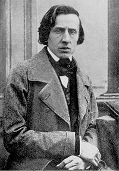

Frédéric Chopin

Por: Louis-Auguste Bisson, 1849.
“Põe toda a tua alma nisso, toca da maneira como sentes a música!”
Nascido na pequena aldeia de Zelazowa Wola, Polonia no dia 22 de fevereiro de 1810.
Frédérick Chopin foi um grande pianista polonês radicado na França e compositor da era romântica e é um dos pianistas mais importantes da história.